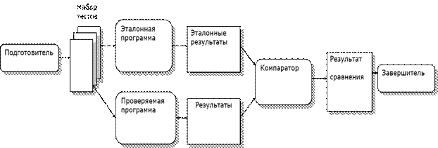
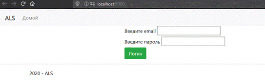
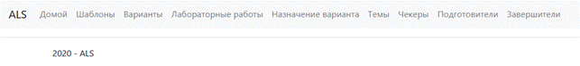
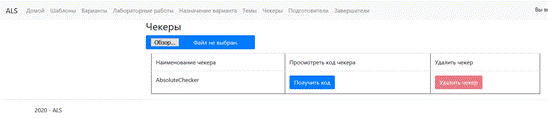
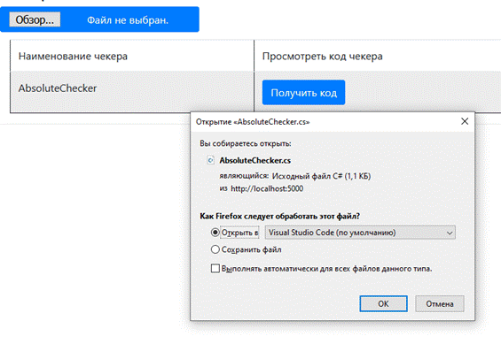
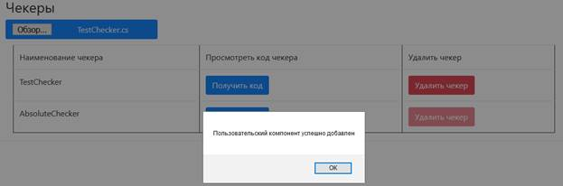
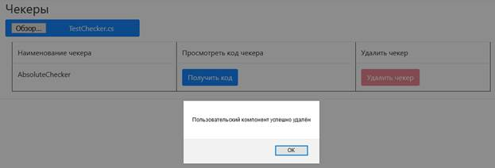

Инструкция преподавателя по работе с компонентами
Термины
Пользовательский компонент – подпрограмма, которая выполняет какую-либо деятельность перед проверкой студенческого решения, во время выполнения проверки и после завершения проверки.
Preparer (Подготовитель) – компонент, позволяющий провести подготовку пользовательской и эталонной программы перед запуском.
Checker (Компаратор) – компонент, позволяющий сравнить результаты работы студенческой программы и эталонной.
Finaliter (Завершитель) – компонент, позволяющий организовать какую-либо последовательность действий после проверки.
Пользовательские компоненты запускаются последовательно в разные этапы работы ИС. Для каждого набора тестовых данных последовательность запускается заново. Цепочка работы компонентов представлена на рисунке 1.

Рисунок 1 – Схема работы пользовательских компонент
Компоненты должны быть написаны на ЯП C# в соответствии с правилами текущей инструкции.
Компоненты автоматически включаются в сборку и подключаются к основной системе посредством рефлексии.
Для написания кода компонента можно использовать любой текстовый редактор (VSCode, Notepad++, VisualStudio и пр.)
Введение
Для начала работы с компонентами вы должны авторизоваться в системе. Для этого перейдите по адресу системы (который должен сообщить Вам системный администратор).
После перехода в ИС вы увидите окно с просьбой авторизоваться (рис. 2)

Рисунок 2 – Приветственное окно входа в систему (В данном случае система находится на локальном компьютере, поэтому мы видим в адресной строке “localhost:5000”
Затем введите свой email и пароль, которые вы ввели при прохождении процедуры регистрации у администратора системы. После ввода данных в текстовые поля нажмите на кнопку “Логин”, Вы должны увидеть окно, представленное на рисунке 3

Рисунок 3 – Главное меню преподавателя
В шапке ИС вы можете увидеть пункты меню системы:
· «Домой» или «ALS» - переход к главной странице сайта;
· «Шаблоны» – страница манипуляций с шаблонами лабораторных работа, для генерации вариантов;
· «Варианты» - страница для Добавления/Редактирования/Создания вариантов для лабораторной работы;
· «Назначение варианта» - Страница для назначения вариантов для студентов;
· «Темы» - создание общей предметной области объединяющий множество лабораторных работ;
· «Чекеры» - страница для манипуляции с чекерами;
· «Подготовители» - страница для манипуляции с подготовителями;
· «Завершители» - страница для манипуляции с завершителями.
Для скачивания исходных кодов компонентов и отправки на сервер используются стандартные диалоги браузера.
Страница с компонентами
Для того чтобы манипулировать с чекерами требуется перейти в пункт меню с одноимённым названием - «Чекеры». После того как Вы перейдёте, перед Вами отобразиться страница манипуляции, которая показана на рисунке 4.

Рисунок 4 – Страница манипуляции с чекерами
Просмотр кода компонента
Для того чтобы просмотреть код чекера, Вы можете его скачать с помощью кнопки «Получить код». После будет открыт стандартный диалог на скачивания файла, и Вы сможете просмотреть файл исходного кода любым текстовым редактором. На рисунке 5 показан диалог скачивания файла “AbsoluteChecker.cs”.

Рисунок 5 – Стандартный диалог скачивания файла (браузер Firefox)
Нужно заметить, что стандартный файл-шаблон AbsoluteChecker.cs нельзя удалить из системы (Кнопка отмечена серым оттенком и не является доступной).
Добавление компонента в систему
Файл на ЯП c# (.cs) и его содержимое(исходный код) должны соблюдать некоторые правила чтобы быть добавлены в систему:
· В файл должны быть подключены следующие пространства имён:
o System.Collections.Generic;
o Для конкретной компоненты пространство имён должно быть разным:
§ Для чекера - ALS.CheckModule.Compare.Preparer;
§ Для финалайтера - ALS.CheckModule.Compare.Finaliter;
§ Для препейрера - ALS.CheckModule.Compare.Checker;
o ALS.CheckModule.Compare.DataStructures;
· Созданный класс компонента и имя файла должны совпадать (учитывая регистр);
· Класс должен реализовывать интерфейс своей компоненты (IChecker, IPreparer и IFinaliter);
· Рекомендую располагать класс в пространстве имён родной сборки для компоненты:
o Для чекера - ALS.CheckModule.Component.Checker;
o Для финалайтера - ALS.CheckModule.Component.Finaliter;
o Для препейрера - ALS.CheckModule.Component.Preparer;
Описание сигнатуры реализуемых методов представлены в приложении 1.
Пример написания чекера представлен в приложении 2.
Для добавления пользовательской компоненты в систему, требуется нажать на кнопку «Обзор…» на странице компонента. И в стандартном диалоге (для вашего браузера) выбрать файл с компонентом.
Пример добавления компоненты представлен на рисунке 6.

Рисунок 6 – Выбираем файл с компонентой
После выбора файла на экране должно быть выведено сообщение об удачном выполнении операции (рис. 7)

Рисунок 7 – Сообщение об удачном добавлении
Файловый диалог разрешает добавить только один файл в систему за раз!!!
Удаление компоненты из системы
Для того чтобы удалить компоненту из системы нажмите на кнопку «Удалить чекер». После на экране будет выведено сообщение об удачном выполнении операции (рис. 8)

Рисунок 8 – Сообщение об удачном удалении